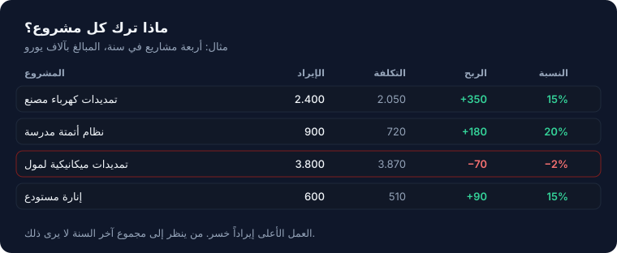
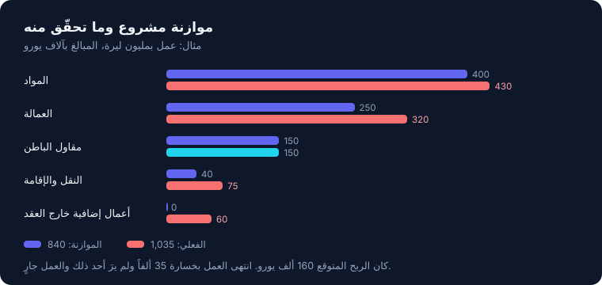

كيف تُقاس ربحية المشاريع؟ رؤيتها والعمل جارٍ لا عند انتهائه
في الشركات التي تعمل بالمشاريع يُعرف الربح غالباً مرة في السنة. المحاسب القانوني يُعدّ الميزانية فيتبيّن كم ربحت الشركة تلك السنة. أما أيّ مشروع ربح وأيّها خسر فلا يظهر في تلك القائمة. في هذا المقال نشرح لماذا لا تُقاس ربحية المشاريع وما الذي يجب تسجيله لقياسها.

ماذا يخفي الربح الإجمالي؟
إذا ربحت الشركة آخر السنة ارتاح الجميع. لكن داخل ذلك المجموع قد تكون أعمال رابحة جداً وأعمال خاسرة ألغى بعضها بعضاً. في المثال التالي تُنهي الشركة السنة بربح، لكن أكبر مشاريعها خسر.

الشركة التي لا ترى هذا الجدول تقدّم في السنة التالية عرضاً بالسعر نفسه لعمل كبير من النوع نفسه. أن تكبروا دون أن تعرفوا أيّ نوع من الأعمال وأيّ عميل وأيّ فريق يربّحكم معناه أن تكبّروا العمل الخاسر أيضاً.
لماذا لا تُقيَّد التكلفة على المشروع؟
في معظم الشركات يُسجَّل المصروف، والناقص هو أيّ مشروع يخصّه. إيصال الوقود يدخل إلى المحاسبة «مصاريف سيارات». وفاتورة الفندق القريب من موقع العمل تصبح «إقامة». والكابل المشترى من تاجر الجملة يُقيَّد في حساب «المواد». كلها في الحساب الصحيح، لكن ضاع من أجل أيّ عمل صُرفت.
وفي العمالة الوضع أصعب. الفريق يعمل خلال الأسبوع في موقعين مختلفين، وراتبه يُدفع آخر الشهر في بند واحد. وجواب سؤال «من عمل في أيّ مشروع وكم يوماً» موجود في دفتر الدوام، إن وُجد.
وهناك الأعمال الإضافية التي لا تُفوتَر. العميل يقول في الموقع «لنمدّ خطاً إلى هنا أيضاً» فيمدّه الفريق. هذا العمل ليس في العقد، ولا أحد يبلّغ المكتب، وموادّه وعمالته تدخل في تكلفة المشروع لكن فاتورته لا تصدر أبداً.
ما الذي يجب تسجيله للقياس؟
رؤية ربحية المشروع لا تحتاج حساباً معقّداً. يكفي أن تُمسَك أربعة أشياء بانتظام.
موازنة في بداية المشروع
أنتم تُجرون حساب تكلفة أصلاً حين تُعدّون عرض السعر. احتفظوا بذلك الحساب بنداً بنداً: المواد، العمالة، مقاولو الباطن، النقل والإقامة. ليكون واضحاً بماذا ستقارنون حين ينتهي العمل.
رمز المشروع في كل مصروف
أمر الشراء، إيصال المصروف، فاتورة مقاول الباطن، أيّاً كان، يُختار عند إدخاله المشروع الذي يخصّه. حين يكون هذا الحقل الواحد إلزامياً يكون نصف المسألة قد حُلّ.
من، في أيّ مشروع، كم ساعة
سجل عمل بسيط يومي أو أسبوعي. رئيس الفريق يؤشّر مساءً من هاتفه مَن كان في أيّ موقع ذلك اليوم. لا تلزم دقّة الدقائق، ومعلومة بمستوى نصف يوم تكفي معظم الشركات.
سجل مستقل للأعمال الإضافية
كل طلب خارج العقد يُبلَّغ به المكتب بسجل قصير قبل تنفيذه ويُؤخذ عليه موافقة العميل. وبذلك تصدر فاتورته ولا يُفسد موازنة المشروع الأصلية.

الرؤية والعمل جارٍ
حساب الربحية بعد انتهاء العمل ينفع للعرض التالي. الفائدة الحقيقية في رؤيتها والعمل مستمر. إذا صُرف ثمانون بالمئة من موازنة العمالة ونصف العمل ما زال قائماً، ففرق كبير بين أن تعرفوا ذلك في الأسبوع الثالث وأن تعرفوه بعد التسليم.
حين ترون مبكراً تكون في يدكم خيارات. تستطيعون تغيير الفريق، أو بحث قيمة العمل الإضافي مع العميل، أو اللجوء إلى بديل في المواد. أما بعد انتهاء العمل فالشيء الوحيد الممكن هو قبول الخسارة.
ولذلك تكفي شاشة واحدة يُنظر إليها مرة في الأسبوع: لكل مشروع موازنته، وما صُرف حتى اليوم، ونسبة إنجاز العمل.
ألا نستطيع فعل ذلك في Excel؟
يُفعل لمشروع واحد، وهناك شركات تفعله. الصعوبة في جمع البيانات. المشتريات في مكان، وإيصالات المصاريف في مكان آخر، والدوام في الدفتر، والفواتير في برنامج المحاسبة. ولا بد أن ينقلها أحدهم كل أسبوع يدوياً إلى جدول واحد. وهذا العمل يُترك عادةً في الشهر الثاني.
ما يضيفه البرنامج هنا ليس الحساب، بل التقاط البيانات من مصدرها. يُختار المشروع عند إدخال أمر الشراء، وعند تصوير إيصال المصروف بالهاتف، وعند إدخال ساعات العمل. لا يُبذل جهد إضافي من أجل التقرير، والسجلات تتجمّع تلقائياً تحت المشروع.
الأدوات التي تفعل ذلك متنوعة: أنظمة ERP فيها وحدة مشاريع، وبرامج خاصة مكتوبة لمحاسبة المشاريع، وحلول تُطوَّر بحسب الشركة. والاختيار يتغيّر بحسب أين تُمسَك المشتريات والمحاسبة حالياً. نحن نفضّل الإضافة فوق الترتيب القائم دون الإخلال به.
أسئلة شائعة
كيف نوزّع المصاريف العامة على المشاريع؟
لا توزّعوها في البداية. قيّدوا أولاً المصاريف المباشرة (المواد، العمالة، مقاولو الباطن، النقل) على المشروع. أما مصاريف مثل الإيجار وموظفي المكتب فيمكن إضافتها لاحقاً بنسبة بسيطة. رؤية المصاريف المباشرة وحدها تغيّر الصورة في معظم الشركات.
ألا يقوم محاسبنا القانوني بذلك أصلاً؟
المحاسب القانوني يمسك الدفاتر الرسمية ويفعل ما هو صحيح ضريبياً. والربحية على مستوى المشروع ليست إلزاماً قانونياً، فهي ليست جزءاً من عمله. هذا سجل تمسكه الشركة لإدارتها هي.
وإذا قاوم الفريق إدخال الساعات؟
لا تطلبوا من كل واحد أن يُدخل بمفرده. يكفي أن يؤشّر رئيس الفريق مرة في اليوم مَن كان في أيّ عمل، وهذا يُتقبَّل بسهولة أكبر بكثير.
خدماتنا ذات الصلة: نظام ERP لشركات الهندسة والمقاولات، حلول ERP للشركات الصغيرة والمتوسطة.
احسب الربح الحقيقي لأحد أعمالك
أدخل قيمة العرض والمصاريف؛ وشاهد الربح الظاهر والربح الحقيقي شاملاً ساعات الفريق جنباً إلى جنب.
افتح الحاسبة